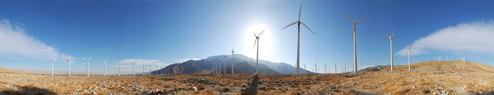

Welcome
The FLOW Lab is a research laboratory in Brigham Young University’s Mechanical Engineering Department. FLOW stands for our three focus areas: FLight, Optimization, and Wind. FLOW also represents the aerodynamic flows that are prevalent in our applications.
Our research laboratory specializes in multidisciplinary design optimization, aerodynamics, wind energy, aircraft design, aero/structural modeling, and computational methods. Current and past research projects include multidisciplinary aircraft optimization, high fidelity aeroelastic wing design, wind farm layout optimization and uncertainty quantification, wind turbine aero/structural design, vertical-axis wind turbine wake modeling, aircraft formation flight analysis and wake modeling, multifidelity optimization, and tailless aircraft design.
Our lab is also interested in broader applications of design and optimization and is currently collaborating with the BYU Neuromechanics Research Group to understand and predict upper limb tremor behavior.
News
2016
- Ryan Barrett presented on “Free-form Aerostructural Optimization of Wind Turbine Blades” at AWEA WINDPOWER in New Orleans, LA.
- Dr. Ning presented on “Large-Scale Wind Farm Optimization and Uncertainty Quantification” at the Windfarms 2016 conference in Dallas, TX.
- The FLOW Lab received two funded research grants from FCL Tech (Facebook). One on “Conceptual Design of High Altitude Long Endurance Aircraft Using Multidisciplinary Optimization” and one on “Efficient High-Fidelity Aeroelastic Analysis and Design of Long Endurance Aircraft”. These research studies are collaborative involving faculty and students from Mechanical Engineering, Civil Engineering, Chemical Engineering, and Computer Science.
- Congratulations to P.J. Stanley, Taylor McDonnell, Kevin Moore, Bryce Ingersoll, Mikkel Unrau, and Jeffrey Carruth on completing their undergraduate degrees! P.J., Taylor, Kevin, and Bryce will remain in our lab to pursue graduate degrees. Mikkel is starting a graduate degree in the Turbomachinery Research Lab.
- Ryan Barrett’s journal paper “Comparison of Airfoil Precomputational Analysis Methods for Optimization of Wind Turbine Blades” is now available through IEEE Transactions on Sustainable Energy (or as a preprint on this site).
- Dr. Ning gave an invited talk Aircraft Multidisciplinary Design Optimization and Aerodynamics at the USTAR Meeting at BYU.
- Dr. Ning gave an invited talk Wind Farm Optimization and UQ at the Wakebench Annual Meeting in Albuquerque, New Mexico.
- Dr. Ning gave an invited talk Wind Energy Design Optimization at Sandia National Laboratories in Albuquerque, New Mexico.
- Congratulations to Bryce Ingersoll on receiving a Department of Mechanical Engineering Graduate Research Fellowship!
- Congratulations to P.J. Stanley on receiving a Department of Mechanical Engineering Graduate Research Fellowship!
- Our paper “Integrated design of downwind land-based wind turbines using analytic gradients” is now available through Wind Energy (or as a preprint on this site).
- Bryce Ingersoll and Dagan Pielstick presented at the Utah Conference on Undergraduate Research. Their presents were titled “UAV Path-Planning Optimization using Bezier Curves and a Receding Horizon Approach” and “Vertical Axis Turbine Wake Interaction” respectively.
- Dr. Ning was selected as a new member of the AIAA Multidisciplinary Design Optimization Technical Committee.
- Dr. Ning gave a presentation on Large Scale Design Optimization to the Condensed Matter Group at BYU.
- Dr. Ning gave a presentation on Large Scale Design Optimization with Mixed Variables to visitors from the Air Force Research Laboratory.
- Eric Tingey, Kevin Moore, and Matt Duffield presented conference papers at AIAA SciTech. Preprints, code, and data, are linked under Publications.
- Parameterized Vertical-Axis Wind Turbine Wake Model Using CFD Vorticity Data by Eric Tingey and Andrew Ning.
- Aerodynamic Performance Characterization of Leading Edge Protrusions on Small Propellers by Kevin Moore and Andrew Ning
- Optimization-Based Path Planning for Separation Assurance on Small Unmanned Aircraft by Matthew Duffield, Andrew Ning, and Timothy McLain.
Older News …